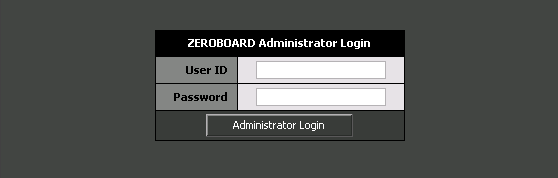
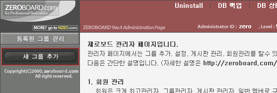
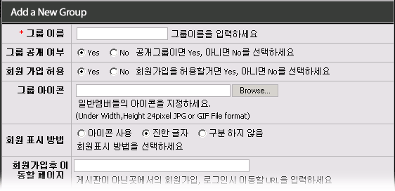
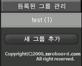
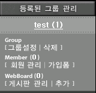
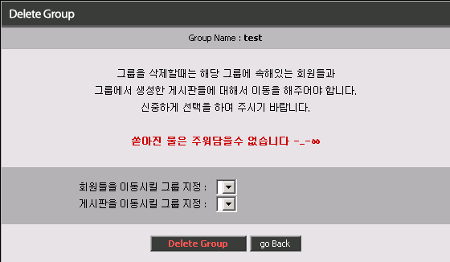

|
그룹 생성/ 삭제 기본적인 제로보드 설치는 성공하신분들은 이제 게시판을 생성을 하여 사용하는 일만 남았습니다. 제로보드는 바로 게시판을 생성해서 사용하는 것이 아니라 그룹이라는 것을 만들어 주어야 합니다. 회원관리나 게시판을 관리할때 하나의 단위로 묶어서 사용하는 개념입니다.
그럼 관리자 페이지로 들어가 봅시다. 관리자 페이지로 들어가는 파일은 admin.php 파일입니다. 브라우저에서 경로를 입력해서 관리자 페이지를 부르세요. http://자신의계정도메인/제로보드디렉토리/admin.php 로 하시면 됩니다.
그럼 다음과 같이 관리자 로그인을 하는 페이지가 나타납니다.  처음 설치할때 입력하였던 관리자 아이디와 비밀번호를 입력하시면 관리자 페이지가 나타납니다. 제일 먼저 하여야 할 일은 그룹을 생성하는 일입니다.
1. 그룹 생성하기 1. 아래 그림에서 빨간 테두리로 표시를 한 [새 그룹 추가] 버튼을 누르세요.  1. 그럼 아래 그림과 같이 그룹의 기본적인 설정을 하는 페이지가 나타납니다.  1. 각 항목에 대해서 설명을 하겠습니다.
1. 그룹 이름 : 생성하는 그룹의 대표이름을 입력합니다.
1. 그룹 공개 여부 : 비공개일 경우 이미 가입한 회원만 해당 그룹의 게시판에 접근이 가능합니다. 1. 그룹 공개 여부 : 다른 공개 그룹에서 회원을 받은후 해당 회원의 그룹을 비공개 그룹으로 이동시켜 1. 그룹 공개 여부 : 놓으면 비공개 활동이 가능해지겠죠?
1. 회원 가입 허용 : 말 그대로 회원을 받을 것인지, 받지 않을 것인지를 지정할수 있습니다. 1. 회원 가입 허용 : 그룹 아이콘 : 현재 그룹에 속한 회원들의 이름 앞에 조그만 아이콘을 붙일수 있습니다. 1. 회원 가입 허용 : 비추천 기능입니다.
1. 회원 표시 방법 : 가입한 회원을 게시물 상에서 표시하는 방법입니다. 1. 회원 표시 방법 : - 아이콘 사용 : 레벨에 따른 아이콘으로 표시를 합니다. (비추천) 1. 회원 표시 방법 :- 진한 글자 : 회원은 진한 이름으로, 비 회원은 일반 글자로 출력이 됩니다. (추천) 1. 회원 표시 방법 :- 구분 하지 않음 : 회원/비회원간의 이름 표시를 구분하지 않고 일반 글자로 출력이 됩니다.
1. 회원가입후 이동할 페이지 : 게시판이 아닌 외부로그인에게 회원가입/ 로그인을 하였을 경우에 1. 회원가입후 이동할 페이지 : 이동이 되는 페이지 설정입니다. 1. 회원가입후 이동할 페이지 : 4.1 버젼 이후로는 사용 되지 않습니다.
1. 게시판 상단에 불러올 파일 : 현재 그룹의 모든 게시판의 상단에 특정한 파일의 내용을 가져와서 출력합니다. 1. 게시판 상단에 불러올 파일 : 프레임을 사용하지 않는 사이트를 구축하실때 상단의 html이나 php를 포함하는 1. 게시판 상단에 불러올 파일 : 파일을 지정하면 일괄 적용이 됩니다. 1. 게시판 상단에 불러올 파일 : 파일을 부르실때는 /home/아이디/public_html/head.html 처럼 절대 경로로 1. 게시판 상단에 불러올 파일 : 사용하시거나 ../head.html 처럼 상대 경로를 이용하시면 됩니다.
1. 게시판 상단에 출력될 내용 : 현재 그룹의 모든 게시판의 상단에 입력된 내용을 출력합니다. 1. 게시판 상단에 출력될 내용 : 파일과는 다르게 웹상에서 고치실 수가 있으니 편합니다.
1. 게시판 하단에 불러올 파일 : 게시판 하단에 특정한 파일의 내용을 가져와서 출력합니다.
1. 게시판 하단에 출력될 내용 : 게시판 하단에 원하는 내용을 출력할수 있습니다.
이상의 항목중 필요한 부분만 입력을 하시고 버튼을 누르시면 그룹이 생성이 됩니다.
2. 그룹 목록에 대한 설명 2. 그룹이 생성되면 관리자 페이지의 왼쪽에 아래와 같은 모습이 나타납니다. 2. (현재 그룹이 하나만 생성되어 있는 상태입니다)  2. 위에 보면 test 라는 그룹이 생성이 되어 있습니다. 2. 제로보드에서는 그룹간의 회원 관리가 되지 않습니다. 2. 단순히 회원과 비회원의 구분을 짓는다는 개념이 강하므로 가능하면 그룹은 하나만 만드는 것이 전체적인 속도나 2. 사용하는 입장에서 매우 좋습니다.
2. 그럼 위의 test 그룹의 이름을 클릭하면 해당 그룹의 상세한 메뉴가 나타납니다.  2. 위에 보면 6개의 기본 메뉴가 있습니다. 2. 그럼 간단히 소개를 하도록 하겠습니다. 2. 그룹 설정 : 위에서 입력한 해당 그룹의 정보를 수정할수 있습니다. 2. 삭제 : 지금 선택한 그룹을 삭제합니다. 2. 회원 관리 : 선택된 그룹에 등록된 회원을 관리할수 있습니다. 2. 가입폼 : 선택된 그룹에서 회원가입을 받을 경우 가입 항목을 설정할수 있습니다. 2. 게시판 관리 : 선택된 그룹에 등록된 게시판의 목록을 보고 세부 사항을 설정할수 있습니다. 2. 추가 : 선택된 그룹에 게시판을 추가할수 있습니다.
그럼 그룹 설정과 그룹 삭제에 대해서 알아보도록 하겠습니다.
3. 그룹 설정 3. 그룹 설정은 말그대로 선택된 그룹의 설정을 변경할수 있습니다. 3. 설정 항목은 위에 그룹 생성하기를 보시면 됩니다.
4. 그룹 삭제 4. 그룹 삭제는 선택된 그룹을 삭제하는 기능입니다.  4. 그룹 삭제를 누르면 위의 그림과 같이 나타납니다. 4. 위에 경고문에도 있듯이 그룹을 삭제하기 전에 꼭 신중하게 생각을 하시기 바랍니다. 4. 하지만 미연의 실수를 방지하기 위해서 제로보드에서 그룹을 삭제할 시에는 해당 그룹의 회원과 게시판을 4. 다른 그룹으로 모두 이동을 시키도록 되어 있습니다. 4. 만약 다른 그룹이 없다면 위의 그림처럼 선택항목이 없습니다. 4. 다른 그룹이 있다면 그룹을 지정하신후 을 누르면 해당 그룹은 삭제가 됩니다.
이제 그룹의 생성과 설정, 삭제에 대해서 알아보았고 이제 게시판 추가/ 관리하는 방법을 알아보도록 하겠습니다.
|